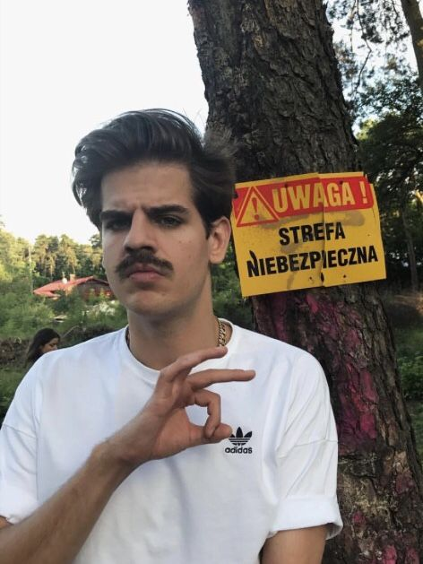

 Lubię poezję polskiego artysty i pisarza Filipa Tadeusza Szczaśniaka. jego teksty są bardzo inspirujące, każdy z nich ma indywidualne znaczenie. Filip pisze o wszystkim =. Bardzo go lubię. Żałuję że nie udało mi się być na jego koncercie, bardzo mi smutno z tego powodu.
Taco około 2018 roku działał w boysbandzie wraz z Quebonafide, ich duo nazywało sie Taconafide. Najbardziej znani są z kawałka o nazwie "Tamagotchi" lub "8 kobiet". Taco jest bardzo popularny Moim marzeniem jest poznać Filipa i móc z nim porozmawiać. Jego muzyka jest wspaniała i zawsze poprawia mi humor. Mam nadzieję, że zainspirowała, kogoś do sluchania jego muzyki, ponieważ dobra muzyka jest śwoetna na każdą okazję i jestem pewna, że każdy znajdzie pioenkę idealną dla siebie. Taco Hemingway jest świetnym człowiekiem. Ja przepraszam ze ten tekst ale nie umiem pisac ok. To tyle dziekuję. Posłuchajcie go pls.
Miłego dnia <3 :)